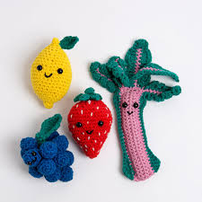
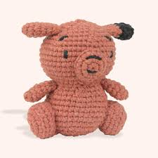
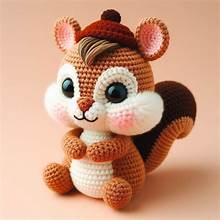

Heklane igračke
Šta je amigurumi? Teško je prvi put i izgovoriti. Ako si se ikada zapitao/la
kako nastaju one slatke heklane igračke koje izgledaju kao da su pobegle iz crtaća,
odgovor je amigurumi.
To je japanska reč koja označava umetnost pletenja ili heklanja malih punjenih figura.
Ali amigurumi nije samo zabavan on nosi poruku pažnje, ručnog rada i unikatnosti.
Šta ga čini posebnim?
- ručno rađena
- od prirodnih materijala
- punjena antialergijskim punjenjem
- bezbedna čak i za bebe


Zašto pokloniti amigurumi?
- rođenje bebe
- prvi rođendan
- poklon učiteljici ili vaspitačici
- dekoraciju sobe
- da izmamite nečiji osmeh

.jpg)

.jpg)
 Otkriva da je oduvek volela ručne radove a da joj je ova tehnika zanimljiva zbog specifičnosti.
Prvi radovi su bili po postojećim šemama za izradu, a kako je vreme odmicao i usavršavala počela i samostalno da kreira lutke.
Otkada se bavi amigurumijem, Binasa ne zna koliko je lutki i drugih predmeta uradila, naglašavajući da uglavnom pravi po porudžbini
pa i izradu prilagođava želji i potrebi kupaca koji se najčešće javljaju po preporuci.
Vreme izrade zavisi od kompleksnosti lutke, pa može trajati jedan ali i čak do sedam dana, pod uslovom da se samo tome posveti.
Pričajući o idejama koje joj stalno naviru ona kaže da ovo nisu proizvodi za serijsku proizvodnju pa zato nikada nema zaliha.
Ono što je jedna od karakteristika Binasinu lutki je unikatnost, jer je apsolutno svaka jedinstvena po nekom detalju koji planirano ili spontano nastanu tokom rada.
Otkriva da je oduvek volela ručne radove a da joj je ova tehnika zanimljiva zbog specifičnosti.
Prvi radovi su bili po postojećim šemama za izradu, a kako je vreme odmicao i usavršavala počela i samostalno da kreira lutke.
Otkada se bavi amigurumijem, Binasa ne zna koliko je lutki i drugih predmeta uradila, naglašavajući da uglavnom pravi po porudžbini
pa i izradu prilagođava želji i potrebi kupaca koji se najčešće javljaju po preporuci.
Vreme izrade zavisi od kompleksnosti lutke, pa može trajati jedan ali i čak do sedam dana, pod uslovom da se samo tome posveti.
Pričajući o idejama koje joj stalno naviru ona kaže da ovo nisu proizvodi za serijsku proizvodnju pa zato nikada nema zaliha.
Ono što je jedna od karakteristika Binasinu lutki je unikatnost, jer je apsolutno svaka jedinstvena po nekom detalju koji planirano ili spontano nastanu tokom rada.